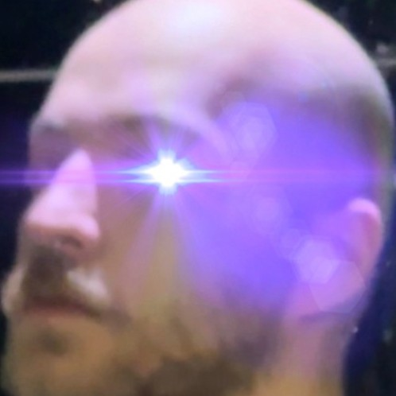

PARTITION 04 / PROFILE
ABOUT
a dossier page for the person behind the system.
IDENTITY

KEREM / IMDAT / SAINT NOTHING
game developer, musician, systems-minded maker
STATEMENT
I build games, interfaces, music, and digital experiences that try to feel alive. I care about atmosphere, system design, emotional texture, visual identity, and making things that feel authored instead of generic.
My work sits somewhere between engineering, art direction, interactivity, and personal myth. I’m especially drawn to game development, audiovisual design, weird interfaces, strong worldbuilding, and projects with a point of view.
This website is a live archive: projects, logs, experiments, fragments, and future things.
TOOLS
- Unity
- C#
- HTML / CSS / JS
- Blender
- Ableton Live
INTERESTS
- game systems
- interactive storytelling
- music and sound
- UI as worldbuilding
- stylized aesthetics
CURRENT FOCUS
- building portfolio work
- developing game prototypes
- sharpening visual identity
- shipping more finished things